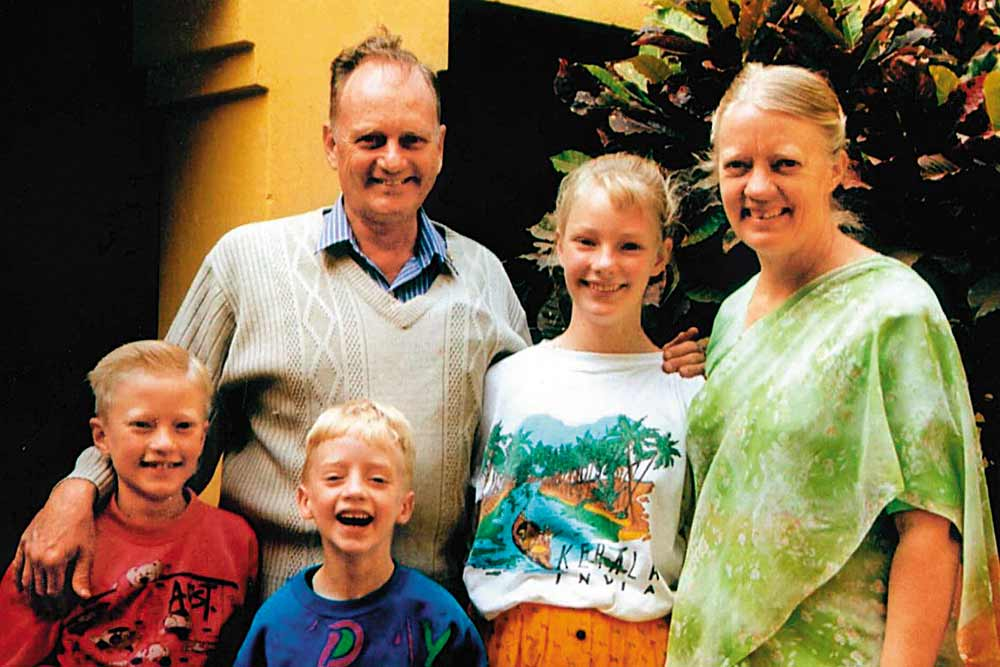

Given His Life for the Needy

Graham Stuart Staines (18 January 1941 – 23 January 1999) was an Australian Christian missionary, who along with his two sons, Philip (aged 10) and Timothy (aged 6),
was burnt to death in India.
It was reported that he could speak the Odia language fluently, and was popular among the patients whom he had managed to cure.In addition to this it was also reported that he used to teach people how to make mats and baskets out of rope, sabai grass (Eulaliopsis binata) and tree leaves.
Fogive : It is far from my mind to punish the persons who were responsible for the death of my husband Graham and my two children. But it is my desire and hope that they would repent and be reformed.